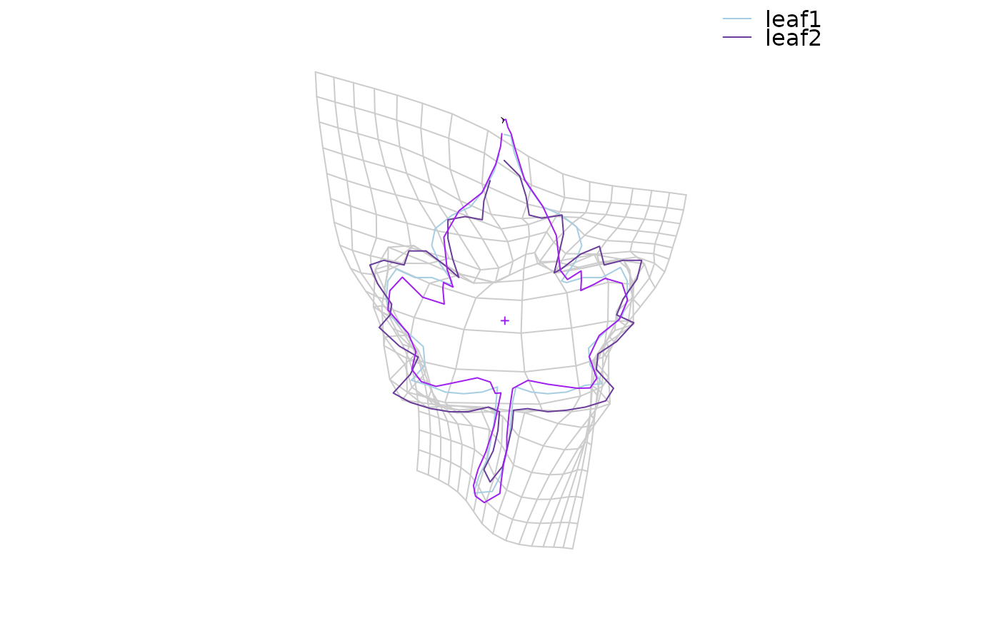

tps2d is the core function for Thin Plate Splines. It is used internally for
all TPS graphical functions.tps_apply is the very same function but with
arguments properly named (I maintain tps2d as it is for historical reasons) when
we want a apply a trasnformation grid.
tps2d(grid0, fr, to) tps_apply(fr, to, new)
| grid0 | a matrix of coordinates on which to calculate deformations |
|---|---|
| fr | the reference shape |
| to | the target shape |
| new | the shape on which to apply the |
a shape.
shapes <- shapes %>% coo_scale() %>% coo_center() %>% coo_slidedirection("up") %>% coo_sample(64) leaf1 <- shapes[14] leaf2 <- shapes[15] # tps grid on the two leafs2 tps_grid(leaf1, leaf2)# apply the (leaf1 -> leaf2) tps trasnformation onto leaf1 # (that thus get closer to leaf2) tps_apply(leaf1, leaf2, leaf1) %>% coo_draw(bor="purple")